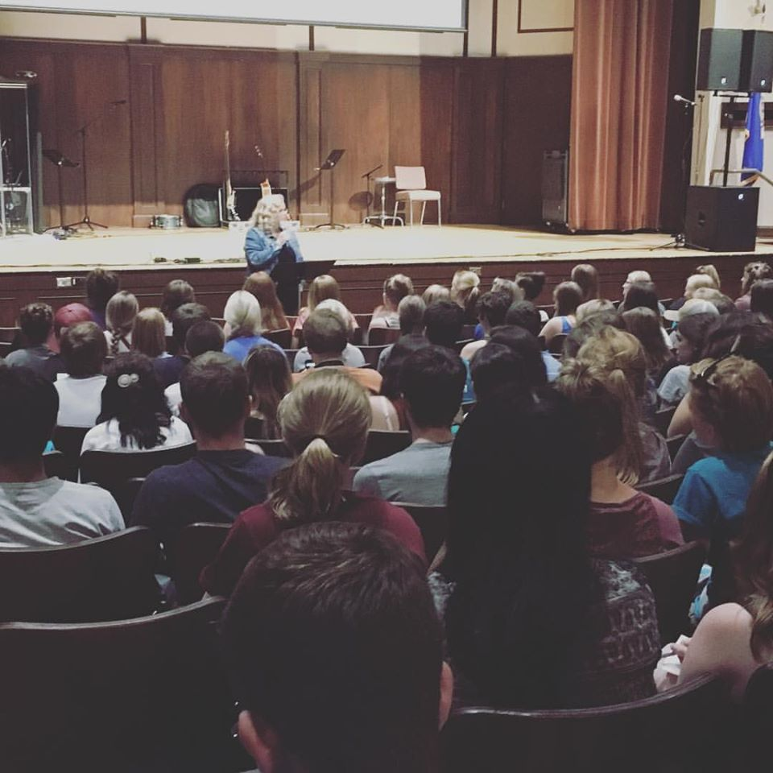

Who are we ?
Chi Alpha is a nationally appointed Christian campus ministry (not a fraternity or sorority) found on universities throughout the United States and around the world. We are groups of college–aged men and women earnestly following Jesus. We invite everyone to be a part of our ministry, regardless of background. Our large group meetings are informal, infused with music and interaction, and cover topics from relationships to the nature of truth. We create opportunities for students to meet God, each other, and the needs of the community.
About the director
Pastor Steph Peterson is the director of the campus minitry. Before she came to the WSU Chi-Alpha, she has served adult ministry for 17 years, and is an ordained minister. She loves to be with the students and her family, and being willing to help those in need. She is not only the club director but also the parent in Chi-Alpha.